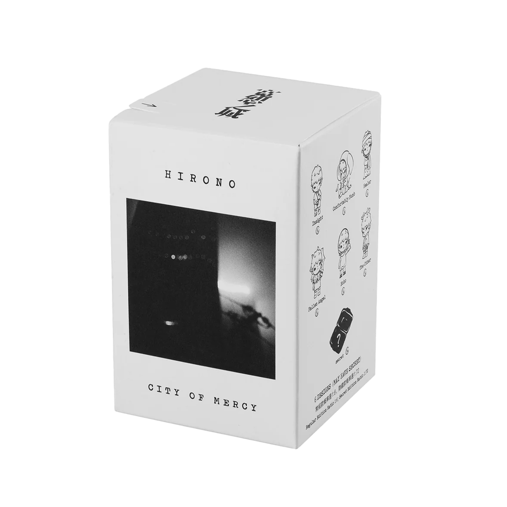
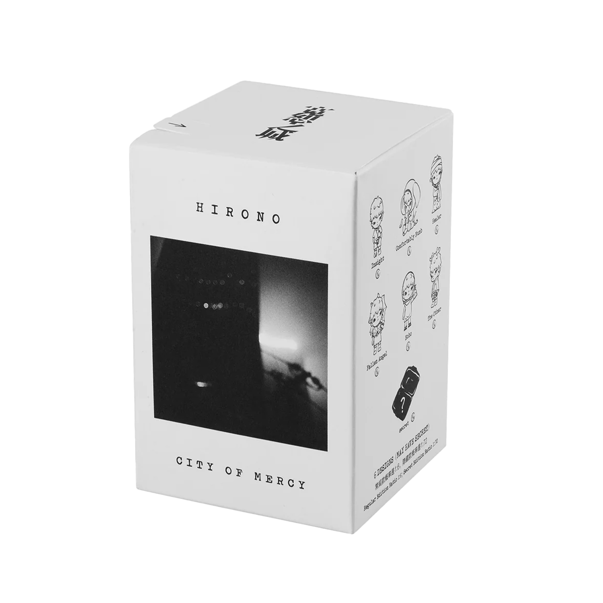
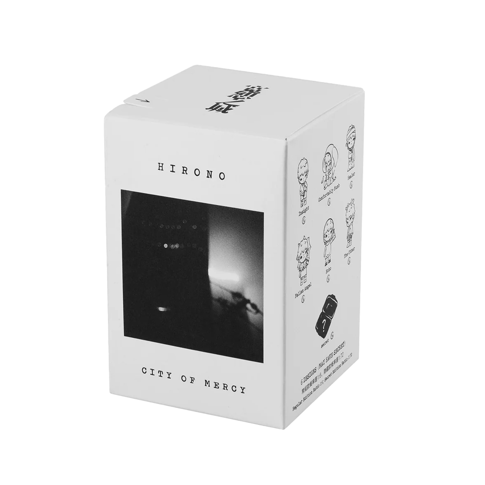

Hirono Series

 



Hirono, or "Xiao Ye 小野," came to life in 2021. Lang got the idea from his newborn child, wishing his child to be wild, free, and not too obedient. Through Hirono, Lang shares the message that it's okay to feel all kinds of emotions, even the hidden ones. Hirono became a voice for those feelings that often go unspoken.
Hirono captures genuine, fleeting emotions, raw states of being that reflect our true selves beyond social masks. Hirono's introverted personality reveals a playful, mischievous side. Often drifting without a clear direction, Hirono embodies the essence of a protective space for innocent imagination amidst a complex world.
Hirono reminds us that we don't need to be perfect, but to be honest. The figures in this series aren't polished or pretty; intentionally made to look worn out and distressed to show the parts of ourselves we're afraid to share.
